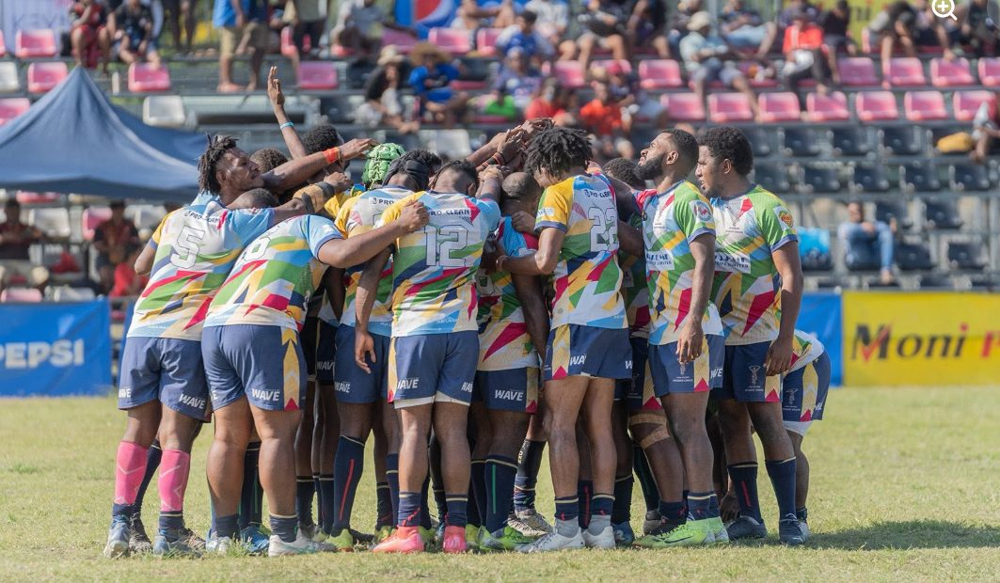
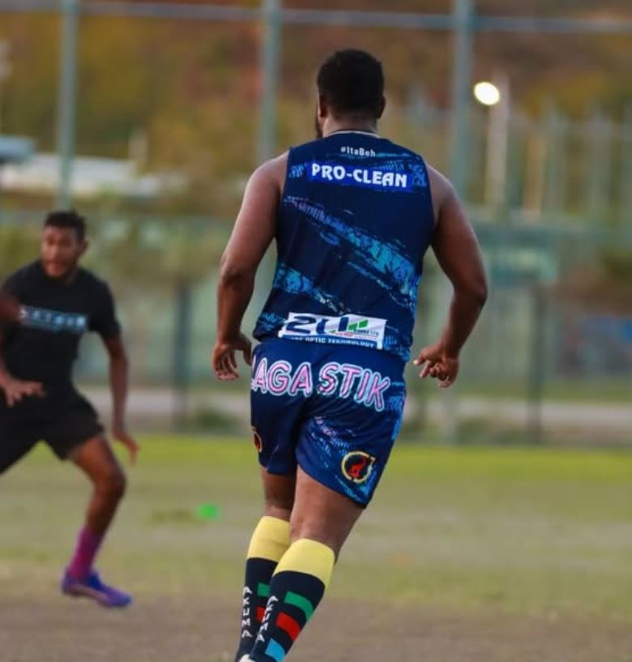
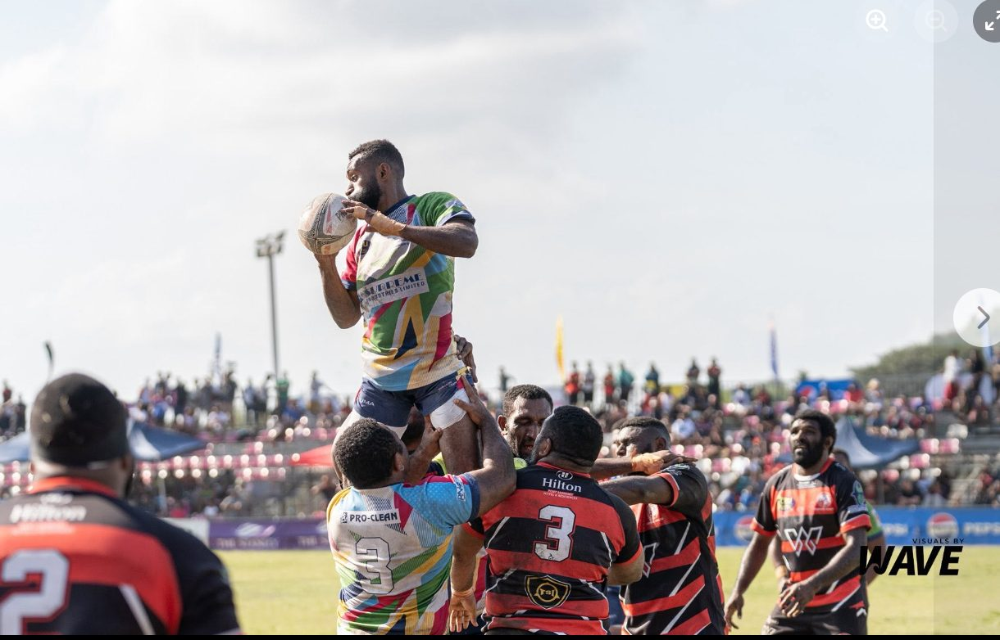

Premier Grade
The club's top men's grade, competing at the highest level of the Capital Rugby Union competition.
From junior development through to premier grade, there's a Harlequins team for every stage of your rugby journey.
At Harlequins Rugby Club, teamwork is the heartbeat of everything we do. From our senior men’s and women’s squads to our youth development programs, each team embodies the club’s proud tradition of discipline, respect, and unity. We field competitive sides across multiple grades in the Capital Rugby Union, providing pathways for players to grow from grassroots to elite levels. Every Harlequin wears the jersey with pride — representing not just skill and strength, but the spirit of community that defines Port Moresby rugby. Whether you’re a seasoned player or just starting out, there’s a place for you in the Harlequins family. Together, we play hard, support each other, and build a legacy that inspires future generations.

The club's top men's grade, competing at the highest level of the Capital Rugby Union competition.
A competitive senior grade supporting depth and player pathways into Premier Grade.
A development grade bridging junior rugby and senior competition.
Competitive women's rugby, part of the club's reported women's-grade history.
Fast-paced sevens rugby, run alongside the fifteens season.
Structured coaching for younger players building fundamental rugby skills.
Weekly training and match schedule at Bava Park, Port Moresby.

| Activity | Day | Time | Location |
|---|---|---|---|
| Junior Development | Tuesday | 5:30 pm | Bava Park, Port Moresby |
| Senior Training | Thursday | 5:30 pm | Bava Park, Port Moresby |
| Club Training | Friday | 5:30 pm | Bava Park, Port Moresby |
| Match Day | Saturday or Sunday | TBC | Match venue: Bava Park, Port Moresby |

Rugby union offers more than a game on Saturday. At Harlequins, training and match play are built around a set of skills that carry well beyond the field:
This approach lines up with the club's broader focus on player pathways and community programs, including financial-literacy initiatives run alongside on-field development.